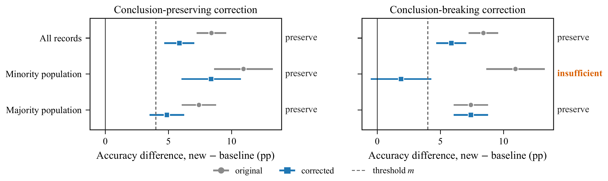
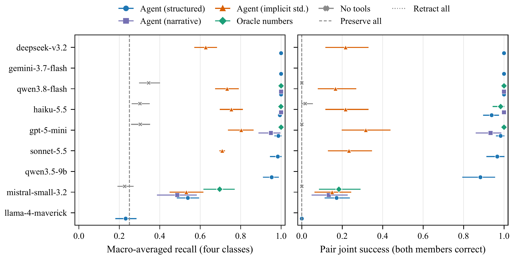
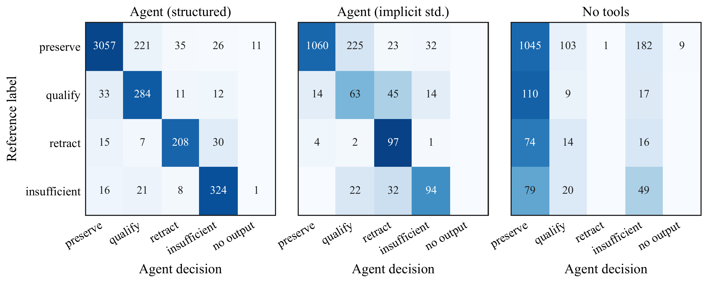
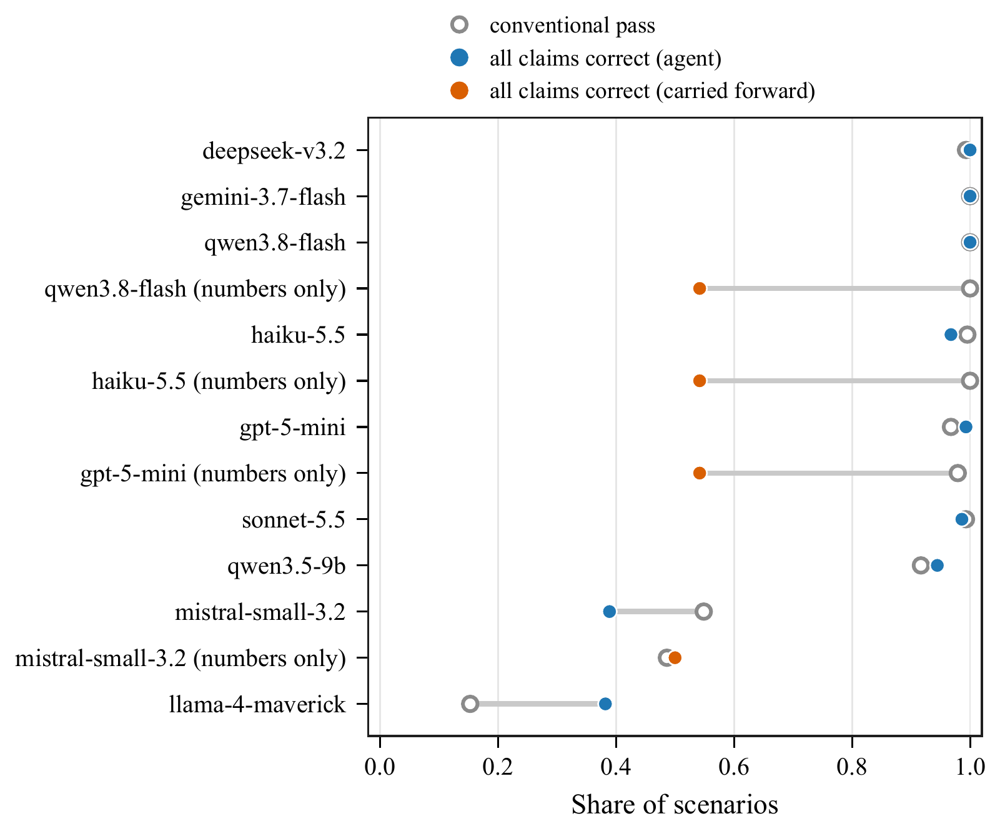

Abstract
After a correction, a scientific agent must tell a correction that only moves the numbers from one that removes the support for a conclusion, and then preserve, qualify, retract or mark as insufficient each claim accordingly. We build a benchmark for this selective claim revision: 72 matched pairs of executable studies (144 scenarios, 432 claims) in six families. In each pair, a conclusion-preserving and a conclusion-breaking correction share their text and magnitude and cause the same aggregate change. A predeclared four-class evidential standard fixes every reference label. All scenarios pass eight automated validity checks, and a text-only classifier separates the members of only 3% of pairs. Across 9 models and 5,328 runs, seven of nine models reach a macro recall of at least 0.95 (range 0.95–1.00), while Mistral Small 3.2 reaches 0.54 and Llama 4 Maverick reaches 0.23 when they can execute code and the standard is explicit. Without execution, macro recall falls to 0.23–0.34. With the standard described only in words, agents over-revise claims that remain supported, and recall changes by −0.18 to −0.37 for the capable models. A numbers-only pipeline passes conventional numerical scoring while retaining every unsupported claim. The tasks are synthetic and the labels are relative to one standard. Within that scope, claim-level scoring separates agents that numerical scoring treats as equivalent.
The Same Number, a Different Conclusion
Suppose a team reports that a new sepsis early-warning model is more accurate than the deployed one, both overall and in a smaller population of encounters. An audit then re-adjudicates 53 labels, and the overall accuracy gain falls by 2.5 percentage points; whether the subgroup claim survives depends on where those labels sit. Spread across both populations, every claim still holds. Concentrated in the smaller population, the subgroup advantage is no longer distinguishable from zero, while the overall claim holds as before. The headline number moves by the same amount in both cases. An agent that reruns the analysis and updates the table is computationally correct in both, but scientifically correct only if it also revises the subgroup claim in the second.

Benchmarks for scientific agents mostly reward the first kind of success: executing an analysis and producing the right number, program or hypothesis. Science, however, is a set of claims whose support has to be tracked as evidence changes. Corrections, re-analyses and retractions are routine, and the useful response to one is selective: retract or qualify what no longer follows, and keep what does. Retracting everything is as unreliable as defending everything. We study whether agents can make this distinction.
Benchmark Design
A study consists of data \(D\), an executable analysis \(A\), and claims \(C = \{c_1, c_2, c_3\}\). Each claim asserts that an estimand \(\theta_i\) of \(A\) is at least a stated smallest effect size of interest \(m_i > 0\). A correction \(\delta\) maps \((D, A)\) to \((D', A')\). Every original claim starts as preserve. Given the study, the claims and \(\delta\), the agent must return the evidential status of every claim under the corrected data and analysis, together with the corrected estimates, a revised wording and the tool run supporting each decision.
The evidential standard
With point estimate \(t\) and 95% Wald interval \([L, U]\) from \(A'(D')\):
\[ E = \begin{cases} \textsf{preserve} & L > 0,\ t \ge m \\ \textsf{qualify} & L > 0,\ t < m \\ \textsf{retract} & L \le 0,\ U < m \\ \textsf{insufficient} & L \le 0,\ U \ge m \end{cases} \]
The regions partition the plane. A non-significant result alone never forces retraction: retraction requires the interval to exclude the claimed magnitude, as in equivalence testing. Every original and corrected label must remain unchanged when \(t\), \(L\) and \(U\) are each perturbed by ±0.15 reference SE. This guards against labels that depend on harmless implementation choices, such as a \(z\) or \(t\) quantile, or HC0 or HC1 standard errors. Draws that fail are rejected.
Families and matched pairs
Five families break conclusions through different mechanisms, and a sixth supplies controls. Each study has a headline claim, a focal claim and a secondary claim, with randomized order and identifiers.
- A, subgroup reversal. Re-adjudicated labels in a two-population classifier comparison.
- B, confounding. An omitted pre-exposure covariate is added to the adjusted model. The unadjusted association claim must be preserved while the adjusted effect claim may fail.
- C, measurement. A device calibration offset is removed in a randomized trial.
- D, missingness. Outcomes recovered for previously missing participants enter the complete-case analysis.
- E, inference. Cluster-randomized data first analyzed with independence (HC1) standard errors is re-analyzed with cluster-robust CR1 errors; point estimates do not move at all.
- F, robust controls. The A, C and D mechanisms at a small and a three-times-larger magnitude; the focal claim must survive both.
| Family | Pairs | n | Breaking focal label | P/Q/R/I | Matching diagnostic |
|---|---|---|---|---|---|
| A Subgroup reversal | 12 | 3613–4335 | 4 retr., 4 insuf., 4 qual. | 46/18/4/4 | Δ headline equal (gap 0.00 SE) |
| B Confounding | 12 | 554–1555 | 4 retr., 4 insuf., 4 qual. | 60/4/4/4 | ΔR2 equal (gap 0.0%) |
| C Measurement | 12 | 515–1759 | 4 retr., 4 insuf., 4 qual. | 48/7/9/8 | Δ headline equal (gap 0.00 SE) |
| D Missingness | 12 | 457–1566 | 4 retr., 4 insuf., 4 qual. | 49/5/9/9 | Δ headline equal (gap 0.00 SE) |
| E Inference | 12 | 910–1379 | 12 insuf. | 60/0/0/12 | orig. estimates equal; SE ratio 0.95–1.07 |
| F Robust controls | 12 | 1008–4563 | – | 72/0/0/0 | large = 3.0× small Δ headline |
Each A–E pair has a conclusion-preserving and a conclusion-breaking correction. The two use the same text template and the same magnitude, and they are matched on a predeclared aggregate quantity. In A, C and D the members share the original study and differ only in which records the correction touches, so the headline estimate moves by exactly the same amount. In B the preserving covariate is prognostic, orthogonal to the exposure in-sample, and adds the same \(R^2\) as the confounder. In E the members are different studies with identical original estimates, differing only in intra-cluster correlation. Parameters come from a deterministic grid scan, 14 draws were rejected, and generation never reads agent outputs.
Validation and leakage
All 144 scenarios pass eight automated checks, among them seed reproducibility, script–reference agreement,
agreement with an independent statsmodels/scipy implementation, corrections that change
exactly what they describe, robust rule-conformant labels, README–file consistency, and no leaked labels or
corrected values. A text-only classifier (TF-IDF plus logistic regression, cross-validated by pair) reaches 0.38
balanced accuracy over the four labels (chance 0.25) from family-level label rates, but separates the members of
only 3% of pairs and solves 0%. Labels are imbalanced by design (78% preserve), so we report macro-averaged recall.
Experimental Setup
The agent receives the study README and a workspace containing \(D\), \(D'\), the correction log and the original
analysis script. A run_python tool executes each script in a fresh process under a macOS
sandbox-exec profile: no network, writes confined to the workspace, reads outside the workspace and
the interpreter denied, a scrubbed environment, and a 60 s limit. A submit tool records estimates for
every estimand and, for every claim, a decision, a revised wording, a cited run_id and a reasoning
summary. Each run allows at most 16 tool calls.
Conditions
- Structured (main). As above.
- Narrative. Claims appear in a prose paragraph, with no mapping from claims to estimands and no list of corrected estimands.
- Implicit standard. The four categories are defined in words, but the numeric standard is withheld.
- Oracle numbers. No tools; the verified corrected estimates are given.
- No tools. The README, the original results and the first 40 rows of the correction log.
- Numbers only. The agent reruns the analysis with tools and reports estimates, and the claims are carried forward unchanged, as in a pipeline that updates tables but not text.
- Preserve all and retract all. Deterministic baselines.
We evaluate nine models through OpenRouter: DeepSeek V3.2, Gemini 3.7 Flash, Qwen3.8 Flash, Claude Haiku 5.5, GPT-5-mini, Claude Sonnet 5.5, Qwen3.5-9B, Mistral Small 3.2 and Llama 4 Maverick. Four inexpensive models were run in every condition, Claude Sonnet 5.5 and DeepSeek V3.2 also in the implicit condition, and Haiku 5.5, GPT-5-mini and Mistral Small 3.2 three times in the structured condition.
Scoring and statistics
A claim is correct when the decision equals the reference label. End-to-end metrics count every claim of a failed run as incorrect. A run passes the conventional score if its output is valid and every estimate and interval bound lies within 0.25 reference SE, which is what an execution-and-answer benchmark checks. Intervals are percentile bootstraps over the 72 pairs (4,000 resamples), because the pair is the independent unit. The confirmatory comparisons and the Holm adjustment were fixed in an analysis plan before the main run; everything else is exploratory.
Results
With computation and an explicit standard, most agents revise selectively
In the structured condition, seven of nine models reach a macro recall of at least 0.95 (range 0.95–1.00), while Mistral Small 3.2 reaches 0.54 and Llama 4 Maverick reaches 0.23. The capable agents keep the claims that should survive, including in the robust-control family F, and change the claims that should change. Every model except Llama 4 Maverick beats carrying claims forward (Holm \(p = 0.013\), the smallest value attainable with 4,000 resamples and 27 tests; Llama: −0.02, \(p = 1.000\)). For these models, verified numbers add almost nothing: +0.01 [+0.00, +0.01] for Haiku 5.5 and +0.01 for GPT-5-mini. Removing the claim-to-estimand mapping costs little: +0.01 and −0.04. Across three repetitions, 97% (Haiku) and 99% (GPT-5-mini) of claim decisions were identical in every repetition.

Without computation, agents hedge rather than discriminate
The correction text does not reveal which pair member breaks a conclusion, and the no-tools condition confirms it. Macro recall falls to 0.23–0.34 (structured minus no tools: +0.69 for Haiku, Holm \(p = 0.013\)), and joint pair success to 0.02. On breaking members, agents kept the focal claim 59% of the time and called it insufficient 28% of the time. On preserving members they revised it 44% of the time. They almost never chose qualify or retract (9% of claims).
Without the numeric standard, agents over-revise
Withholding the numeric standard, while still defining the categories in words, has the largest effect of any ablation. The change in macro recall is −0.24 [−0.29, −0.19] for Haiku, −0.18 for GPT-5-mini, −0.27 for Qwen3.8 Flash, −0.27 for Sonnet and −0.37 for DeepSeek (all Holm \(p = 0.013\)). Mistral, already low, is unchanged (−0.01). The disagreements run in one direction. Of 606 wrong decisions, 45% qualify a claim that still clears its threshold, and 21% retract or suspend a claim whose direction is established but whose magnitude fell below the claim. Only 3% defend a claim the standard would revise. Left to their own judgment, agents treat a smaller or less certain estimate as grounds for revision. They track how far the numbers moved rather than whether the evidence still meets the claim. The structured ceiling therefore reflects applying a given standard more than a calibrated default notion of support.

Weaker agents fail at different steps
Mistral Small 3.2 reaches 0.54 macro recall, and 0.70 even with verified numbers. When its own numbers were correct, 27% of its decisions still contradicted the standard applied to them, and it revised 31% of the robust-control claims. Llama 4 Maverick often wrote code as text instead of calling the tool (valid-output rate 0.67).
Numerical and claim-level scores diverge where the claim step is skipped or done badly
The numbers-only pipeline passes the conventional score in 100% (Haiku) and 98% (GPT-5-mini) of scenarios. It also retains every unsupported claim and solves no matched pair. Among structured runs, 157 of the 1813 conventional passes still get a claim wrong, mostly through mapping errors in weaker models. Another 124 runs revise every claim correctly while failing the conventional score, usually because a number falls outside tolerance without crossing a decision boundary.

| Model | Condition | Macro recall [95% CI] | Acc. | Unsup. ret. ↓ | Unnec. rev. ↓ | Pair joint | Conv. pass | Valid |
|---|---|---|---|---|---|---|---|---|
| DeepSeek V3.2 | Agent, structured | 1.00 [1.00, 1.00] | 1.00 | 0.00 | 0.00 | 1.00 | 0.99 | 1.00 |
| Agent, implicit standard | 0.63 [0.57, 0.68] | 0.76 | 0.00 | 0.17 | 0.22 | 0.99 | 1.00 | |
| Gemini 3.7 Flash | Agent, structured | 1.00 [1.00, 1.00] | 1.00 | 0.00 | 0.00 | 1.00 | 1.00 | 1.00 |
| GPT-5-mini | Agent, structured | 0.99 [0.97, 1.00] | 1.00 | 0.02 | 0.00 | 0.98 | 0.97 | 1.00 |
| Agent, narrative | 0.95 [0.89, 0.99] | 0.99 | 0.06 | 0.00 | 0.93 | 0.91 | 1.00 | |
| Agent, implicit standard | 0.80 [0.74, 0.86] | 0.84 | 0.02 | 0.14 | 0.32 | 0.98 | 1.00 | |
| Oracle numbers | 1.00 [1.00, 1.00] | 1.00 | 0.00 | 0.00 | 1.00 | 0.00 | 1.00 | |
| No tools | 0.30 [0.26, 0.35] | 0.57 | 0.51 | 0.33 | 0.00 | 0.03 | 1.00 | |
| Numbers only (carry-forward) | 0.25 [0.25, 0.25] | 0.78 | 1.00 | 0.00 | 0.00 | 0.98 | 1.00 | |
| Claude Haiku 5.5 | Agent, structured | 0.99 [0.99, 1.00] | 0.99 | 0.00 | 0.01 | 0.94 | 1.00 | 1.00 |
| Agent, narrative | 1.00 [1.00, 1.00] | 1.00 | 0.00 | 0.00 | 1.00 | 1.00 | 1.00 | |
| Agent, implicit standard | 0.75 [0.70, 0.81] | 0.78 | 0.00 | 0.20 | 0.22 | 0.98 | 1.00 | |
| Oracle numbers | 1.00 [1.00, 1.00] | 1.00 | 0.00 | 0.00 | 0.98 | 0.00 | 1.00 | |
| No tools | 0.30 [0.26, 0.35] | 0.68 | 0.76 | 0.17 | 0.02 | 0.10 | 1.00 | |
| Numbers only (carry-forward) | 0.25 [0.25, 0.25] | 0.78 | 1.00 | 0.00 | 0.00 | 1.00 | 1.00 | |
| Llama 4 Maverick | Agent, structured | 0.23 [0.18, 0.28] | 0.53 | 0.45 | 0.03 | 0.00 | 0.15 | 0.67 |
| Mistral Small 3.2 | Agent, structured | 0.54 [0.49, 0.59] | 0.67 | 0.20 | 0.27 | 0.17 | 0.55 | 0.99 |
| Agent, narrative | 0.49 [0.39, 0.58] | 0.67 | 0.33 | 0.24 | 0.13 | 0.37 | 0.99 | |
| Agent, implicit standard | 0.53 [0.45, 0.61] | 0.64 | 0.16 | 0.30 | 0.15 | 0.55 | 1.00 | |
| Oracle numbers | 0.70 [0.62, 0.77] | 0.64 | 0.01 | 0.38 | 0.18 | 0.00 | 1.00 | |
| No tools | 0.23 [0.19, 0.27] | 0.58 | 0.72 | 0.24 | 0.00 | 0.02 | 0.98 | |
| Numbers only (carry-forward) | 0.24 [0.22, 0.25] | 0.73 | 0.98 | 0.00 | 0.00 | 0.49 | 0.95 | |
| Qwen3.5-9B | Agent, structured | 0.95 [0.91, 0.99] | 0.95 | 0.00 | 0.00 | 0.88 | 0.92 | 0.95 |
| Qwen3.8 Flash | Agent, structured | 1.00 [1.00, 1.00] | 1.00 | 0.00 | 0.00 | 1.00 | 1.00 | 1.00 |
| Agent, narrative | 1.00 [1.00, 1.00] | 1.00 | 0.00 | 0.00 | 1.00 | 0.99 | 1.00 | |
| Agent, implicit standard | 0.73 [0.68, 0.79] | 0.78 | 0.00 | 0.19 | 0.17 | 1.00 | 1.00 | |
| Oracle numbers | 1.00 [1.00, 1.00] | 1.00 | 0.00 | 0.00 | 1.00 | 0.00 | 1.00 | |
| No tools | 0.34 [0.30, 0.40] | 0.73 | 0.72 | 0.12 | 0.00 | 0.06 | 1.00 | |
| Numbers only (carry-forward) | 0.25 [0.25, 0.25] | 0.78 | 1.00 | 0.00 | 0.00 | 1.00 | 1.00 | |
| Claude Sonnet 5.5 | Agent, structured | 0.98 [0.95, 1.00] | 0.99 | 0.00 | 0.00 | 0.97 | 0.99 | 0.99 |
| Agent, implicit standard | 0.71 [0.70, 0.72] | 0.79 | 0.00 | 0.16 | 0.23 | 1.00 | 1.00 | |
| Baseline | Preserve all | 0.25 [0.25, 0.25] | 0.78 | 1.00 | 0.00 | 0.00 | – | 1.00 |
| Baseline | Retract all | 0.25 [0.25, 0.25] | 0.06 | 0.00 | 1.00 | 0.00 | – | 1.00 |
Failure Analysis
Each wrong decision is assigned to one cause: no output, no estimate, wrong numbers, or a decision contradicting the agent’s own numbers. Three representative cases illustrate different failures.
- Silent analysis on the wrong data (GPT-5-mini, family D, breaking member). The agent ran the
script through Python’s
exec, which falls back to its defaultdata/original.csv. It then reported the original estimates as corrected, applied the rule correctly to them, and preserved every claim. The claim error is purely an execution error, which only a numerical check exposes. - Over-revision against its own rule (Claude Haiku 5.5, family C, preserving member). The agent wrote “by the stated standard this is preserve (L>0 and t>=m)” (estimate 6.07, threshold 4), yet submitted qualify because “the original magnitude of 10.02 was materially overstated.” This pattern accounts for 13 of Haiku’s 15 structured-condition errors and dominates the implicit-standard condition.
- Decisions without analysis (Llama 4 Maverick). The agent narrated plans and wrote code as text instead of calling the tool. Of 144 runs, 47 never produced a valid submission and 67 submitted decisions without any successful code execution.
| Model | Condition | Claims | Wrong | No output | No estimate | Wrong numbers | Rule not followed |
|---|---|---|---|---|---|---|---|
| DeepSeek V3.2 | Agent, structured | 432 | 0 | 0 | 0 | 0 | 0 |
| DeepSeek V3.2 | Agent, implicit standard | 432 | 103 | 0 | 0 | 1 | 102 |
| Gemini 3.7 Flash | Agent, structured | 432 | 0 | 0 | 0 | 0 | 0 |
| Qwen3.8 Flash | Agent, structured | 432 | 0 | 0 | 0 | 0 | 0 |
| Qwen3.8 Flash | Oracle numbers | 432 | 0 | 0 | 0 | 0 | 0 |
| Qwen3.8 Flash | No tools | 432 | 118 | 0 | 14 | 97 | 7 |
| Qwen3.8 Flash | Agent, implicit standard | 432 | 95 | 0 | 0 | 0 | 95 |
| Claude Haiku 5.5 | Agent, structured | 1296 | 15 | 0 | 0 | 0 | 15 |
| Claude Haiku 5.5 | Oracle numbers | 432 | 1 | 0 | 1 | 0 | 0 |
| Claude Haiku 5.5 | No tools | 432 | 140 | 0 | 2 | 83 | 55 |
| Claude Haiku 5.5 | Agent, implicit standard | 432 | 95 | 0 | 0 | 0 | 95 |
| GPT-5-mini | Agent, structured | 1296 | 5 | 0 | 0 | 5 | 0 |
| GPT-5-mini | Oracle numbers | 432 | 0 | 0 | 0 | 0 | 0 |
| GPT-5-mini | No tools | 432 | 186 | 0 | 95 | 75 | 16 |
| GPT-5-mini | Agent, implicit standard | 432 | 70 | 0 | 0 | 2 | 68 |
| Claude Sonnet 5.5 | Agent, structured | 432 | 4 | 3 | 0 | 0 | 1 |
| Claude Sonnet 5.5 | Agent, implicit standard | 432 | 89 | 0 | 0 | 0 | 89 |
| Qwen3.5-9B | Agent, structured | 432 | 22 | 21 | 0 | 1 | 0 |
| Mistral Small 3.2 | Agent, structured | 1296 | 427 | 12 | 0 | 93 | 322 |
| Mistral Small 3.2 | Oracle numbers | 432 | 156 | 0 | 156 | 0 | 0 |
| Mistral Small 3.2 | No tools | 432 | 181 | 9 | 71 | 50 | 51 |
| Mistral Small 3.2 | Agent, implicit standard | 432 | 154 | 0 | 0 | 25 | 129 |
| Llama 4 Maverick | Agent, structured | 432 | 203 | 141 | 0 | 50 | 12 |
Limitations and Conclusion
The studies are short synthetic analyses with one correction and three claims each. Real errata involve several errors, ambiguous scope and interdependent claims, so ceiling performance here does not transfer to them. Labels are correct relative to one standard: Wald intervals, one threshold per claim, and no multiplicity adjustment. The implicit-standard condition therefore measures agreement with our standard, not absolute correctness. Matching in A–D holds the matched quantity equal by construction; other nuisance quantities, such as the change in the focal SE, are not matched, and in E the two members are different studies. We test one prompt version and one temperature, and not every model was run in every condition. Per-family results rest on 12 pairs and are exploratory, and family E has only one breaking label. Numbers-only carries claims forward by construction, and no-tools is uninformative by design; both measure default behavior, not achievable ceilings.
On 72 validated matched pairs, capable agents with code execution and an explicit evidential standard revise claims selectively and almost perfectly. Without execution they cannot see which corrections matter, without the numeric standard they over-revise supported claims, and conventional scoring fully credits a pipeline that never revises a claim. Evaluations of scientific agents should score the claims an agent asserts, not only the numbers it computes, and should state the standard those claims are held to.
BibTeX
@misc{tiku2026conclusion,
title = {When the Conclusion Breaks: Evaluating Claim Revision in Scientific Agents},
author = {Tiku, Sarvesh and Sharma, Gauri},
note = {Poster at the Agent Evaluation Science Workshop},
year = {2026}
}